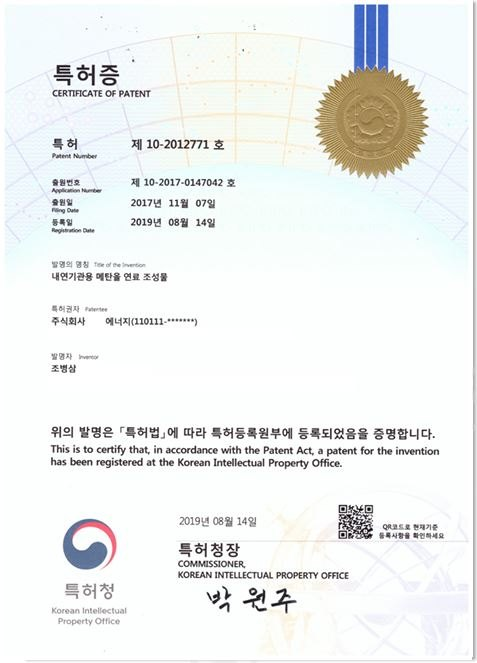
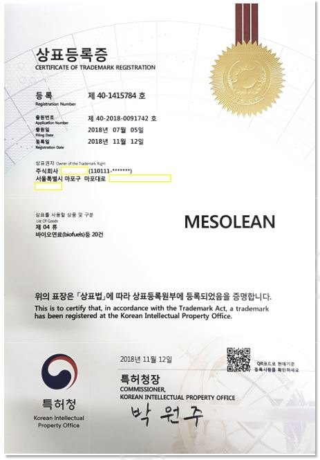
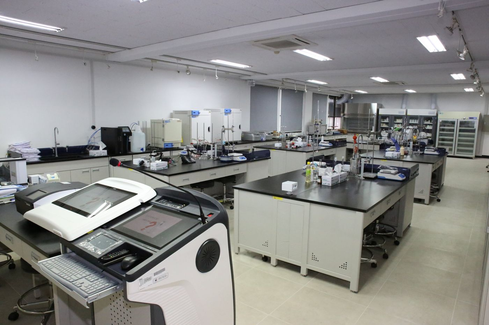

회사 소개
(주)비젼에너텍은 1998년 배합 DB 개발 이후 알코올 고함량 혼합연료를 연구하고 시험해 온 연료 기술 회사입니다.
회사 개요
당사는 가솔린에 알코올을 조금 넣는 방식이 아니라, 알코올 50%를 석유화학원료·첨가제와 재조합하는 연료 기술을 개발했습니다. 한국부산대학교, 중국 상하이 화공 연구원, 중국석화 무순석유화공연구원, 한국석유관리원 등 외부 기관의 시험을 거쳤습니다.
핵심 기술은 혼합 기술과 첨가제 제조기술이며, 한국과 중국에서 특허를 등록하고 국제 출원과 상표 등록을 진행했습니다.
| 국문 상호 | (주)비젼에너텍 |
|---|---|
| 영문 상호 | KOREA VISION ENERTECH CO.,LTD |
| 중문 상호 | 韩国飞展能源技术 |
| 제품 | 메솔린 (MESOLEAN), 에솔린 (ESOLEAN) |
| 이메일 | kang@mesolean.net |
| 웹사이트 | WWW.ESOLEAN.COM |
연혁
시험 · 특허 · 상표 이력
- 한국부산대학교 기계기술연구소 실험결과 (자동차 연료 성능검사)
- 중국 특허 등록 (ZL200410046128.8)
- 고청결 가솔린 샘플, 중국석화 무순석유화공연구원 품질검사 합격
- MESOLEAN 기술 상용화 완료
- 중국 상하이 화공 연구원 연료 성능검사
- 한국 상표권 등록 (MESOLEAN, 제40-1415784호)
- MESOLEAN 국제(WIPO) 상표권 등록 (No. 1456109)
- 한국석유관리원 석유기술연구소 MESOLEAN 실험결과 합격
- 한국 특허 등록 (10-2012771)
- 중국 상표권 등록 (美守林, 第39937885号)
- 산서 타이위안 보티엔석유와 합작법인 설립 (山西众亨新能源技术开发有限公司)
- 산서성 기업투자 프로젝트 등록(입항)
특허 · 상표
보유 특허와 등록 상표
| 구분 | 번호 |
|---|---|
| 한국 특허 (MESOLEAN) | 10-2012771 |
| 중국 특허 | ZL200410046128.8 |
| 국제 PCT 출원 | PCT/KR2018/012671 |
| 한국 상표 | 제40-1415784호 |
| 중국 상표 | 第39937885号 |
| 미국 상표 USPTO | Reg. No. 5,809,697 |
| 국제 상표 WIPO | No. 1456109 |
특허 · 상표 등록증
등록 기관이 발급한 등록증입니다.

한국 특허증 제10-2012771호내연기관용 메탄올 연료 조성물 · 등록 2019.08.14 
한국 상표등록증 제40-1415784호MESOLEAN · 등록 2018.11.12 
중국 상표등록증 第39937885号美守林 · 등록 2020.03.21 
미국 상표등록증 Reg. No. 5,809,697MESOLEAN · 등록 2019.07.23
생산시설
산서 합작법인(山西众亨新能源技术开发有限公司)의 생산·유통 기지 계획입니다. 완제품 저장탱크, 입출고장(주유 캐노피), 사무·부대시설로 구성됩니다.



생산 공정
원료 입고부터 출고까지 7단계로 관리합니다.
- 원료 입고입고 원료의 수분·품질 확인
- 하차·주입수분 유입 방지, 재질에 맞는 배관
- 원료 보관흡습 방지 저장
- 혼합·교반정해진 순서로 균일하게 혼합
- 품질 확인옥탄가·상안정성 확인
- 완제품 저장수분 관리와 저장 안정성
- 출고출고 전 품질 확인
공정 흐름을 설명하기 위한 개념도이며, 단계별 세부 관리기준은 비공개입니다.
도입과 협력을 문의하세요
기술 라이선스, 합작 생산, 시험 자료 요청 등 어떤 문의든 메일로 보내 주시면 답변드립니다.
- 회사
- (주)비젼에너텍 · KOREA VISION ENERTECH CO.,LTD · 韩国飞展能源技术
- 이메일
- kang@mesolean.net
- 웹사이트
- WWW.ESOLEAN.COM